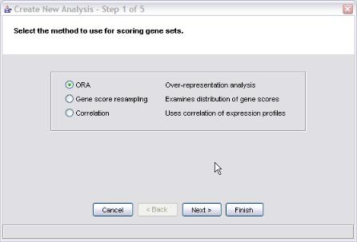
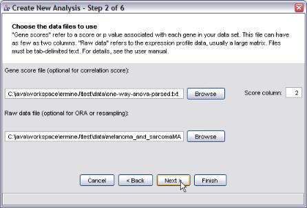
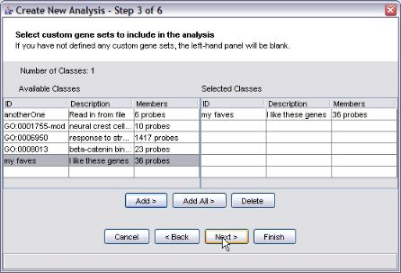
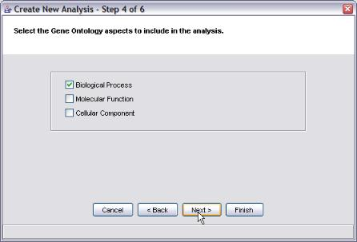
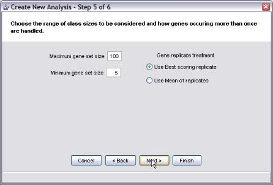

We suggest that you read this page first, as it explains some aspects of analysis that are common to all the methods.
Over-representation analysis (ORA) examines the genes that meet a selection criterion and determines if there are gene sets which are statistically over-represented. This method differs from the resampling-based analysis in that you must set a gene score threshold for gene selection. The software does not support entering a list of selected genes. Instead, you input the list of all genes along with their scores, and set the threshold.
The probabilities produced by ermineJ ORA are computed using the binomal approximation to the hypergeometric distribution.
Step 1 is to choose the type of analysis. We select ORA:
The next window is common to all analysis methods. Two data files are requested. For ORA, only the Gene Score File is required. However, entering the raw data file will allow you to visualize the results later.
The Gene Score file format is explained here. In this panel, you must also select the score column. The first column in the gene score file contains the probe identifiers; the gene scores themselves are in the second or higher column. If your gene score file only has two columns, just use the default value of 2.
The Raw data file format is explained here .
This, also common to all analysis methods, asks you to add any custom gene sets you may have defined.
Step 4 is also common to all the methods. Select the GO aspects you want to include in the analysis.
Step 5 is also common to all the methods.
The maximum and minimum gene set sizes determine the range of gene set sizes that will be considered. We recommend avoiding the use of very small or very large gene sets. There are several reasons to avoid using extremes:
The "Gene replicate treatment " refers to what is done when a gene occurs more than once in the dataset.
There are two options, "Best" and "Mean". The application of these methods differs for the different methods. There is more information here
This step is specific to the ORA analysis.
The gene score threshold determines how genes are "selected". Genes that meet the threshold requirement are considered "good". ErmineJ operates differently from some other available tools in that you do not enter the "good" genes yourself: the software selects them based on the criteria you set here.
Tip: If you are using raw p values as your gene scores, make sure your threshold is a value between 0 and 1 (e.g., 0.0001), check the "log transform" box, and leave the "larger scores are better" box unchecked. This is because the "larger is better" choice relates to the original threshold, not the log-tranformed threshold. On the other hand, if your p-values are already -log-transformed, you should use the exact opposite settings.
If you negative log-transform the gene scores, then your input gene scores are transformed according to the function f(x) = -log10(x). This option is provided as a convenience as the most common type of gene score is a p-value. The transform f(x) puts the p values on a more useful scale. However, you should still leave the "larger scores are better" box unchecked, as this refers to your original data.
If you are using fold change as your gene scores, you may want to check the "larger scores are better" box. This assumes that you have taken the absolute value of the fold change values before entering them into ermineJ. That way, changes up and down will be considered equally. Alternatively, you could focus on changes up or down by retaining the sign on the fold change values and setting this option depending on which direction of change you are interested in analyzing.

After hitting finish, you will rapidly get a new result set in the output (results) table. This is explained here